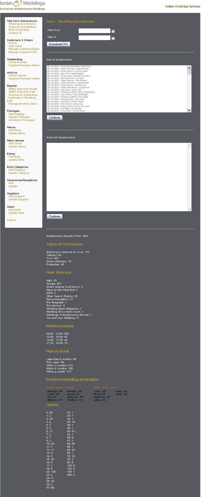

| Date From | This field along with the 'Date To' field help to narrow the results of the active and archived questionnaire fields. |
| Date To | This field along with the 'Date From' field help to narrow the results of the active and archived questionnaire fields. |
| Active Questionnaires | This is the display of Active Questionnaires and they can be selected to view in more detail. |
| Archived Questionnaires | This is the display of Archived Questionnaires and they can be selected to view in more detail. |
| Types of Ceremonys | Statistics about the types of ceremonys that were selected in the past |
| Hear About Us | Statistics about how the clinets have heard about Ionian Weddings. |
| Preferred Times | Statistics about when the clients prefer to be contacted. |
| Plan to Book | Statisics about when the clinets generally plan to book. |
| Preferred Destinations | Statistics about the destinations that were selected in the past. |
| Guests | Statistics about the desred amount of guests selected in the past. |